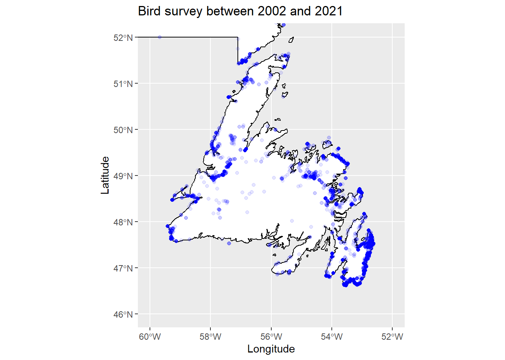
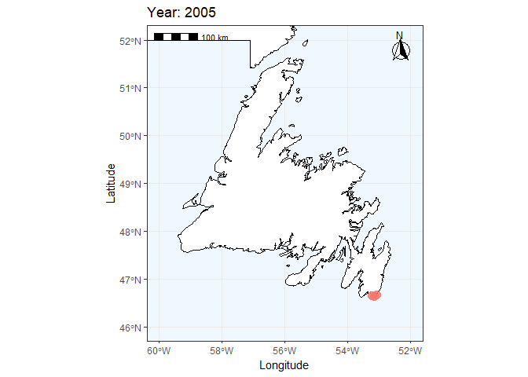

Chapter 5 Create GIF animation
1) Create static map
Let’s use the previous script map from NL with zoom on Newfoundland island Before running this, you need to have created “map_nl”, see Import background basemap Import background basemap
ggplot() +
geom_sf(data = map_nl, colour = "black", fill = "white") +
geom_sf() +
# We can add an ENTIRELY new data set inside a geom
geom_point(data = birdsurvey,
aes(x = decimalLongitude,
y = decimalLatitude),
alpha = 0.1,
colour = "blue") +
labs(
title = "Bird survey between 2002 and 2021"
) +
xlab("Longitude")+ ylab("Latitude") +
# Zoom in to a specific view
coord_sf(xlim = c(-60, -52),
ylim = c(46, 52))
2) Subset species and period
Bubo scandiacus
Bubo <- subset(birdsurvey, species == 'Bubo scandiacus')
Bubo_2011_2021 <- subset(Bubo, year >= 2011 & year <= 2021)### Plot Bubo distribution only
ggplot() +
geom_sf(data = map_nl, colour = "black", fill = "white") +
geom_sf() +
# We can add an ENTIRELY new data set inside a geom
geom_point(data = Bubo_2011_2021,
aes(x = decimalLongitude,
y = decimalLatitude),
alpha = 0.8,
size = 3,
colour = "darkgreen") +
labs(
title = "Snowy owl survey between 2011 and 2021"
) +
xlab("Longitude")+ ylab("Latitude") +
# Zoom in to a specific view
coord_sf(xlim = c(-60, -52),
ylim = c(46, 52))+
theme_bw()
2) Create GIF by year
### Create a ggplot + add specific gganimate function = transition_time
plot1 <- ggplot() +
geom_sf(data = map_nl, colour = "black", fill = "white") +
# We can add an ENTIRELY new data set inside a geom
geom_point(data = Bubo,
aes(x = decimalLongitude,
y = decimalLatitude,
color = as.factor(year)),
alpha = 0.8,
size = 3.5) +
transition_time(year) + #### this will allow us to get one image of data by year
labs(
title = "Bird survey between 2002 and 2021"
) +
xlab("Longitude")+ ylab("Latitude") +
# Zoom in to a specific view
coord_sf(xlim = c(-60, -52),
ylim = c(46, 52)) +
labs(title = "Year: {frame_time}") ##### Add scale bar and north arrow
plot1 <- plot1 +
annotation_scale(location = "tl", width_hint = 0.3) +
annotation_north_arrow(location = "tr", which_north = "true",
height = unit(1, "cm"), width = unit(1, "cm"),
pad_x = unit(0.25, "cm"), pad_y = unit(0.25, "cm"),
style = north_arrow_fancy_orienteering) +
theme_bw() +
theme(panel.background = element_rect(fill = "aliceblue"),
legend.position = "none") ###### This part will create the gif
animate(plot1, nframes = 10, duration = 15) ### nframes = is the number of frames/images we want (here, one by year = 10 years) / duration is the duration of the gif, here 15 secondes
Add the Snowy owl data